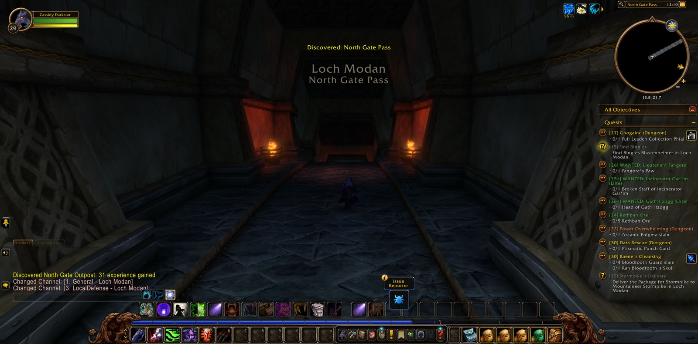

Cassidy Darkstar set out from the Deepwater Tavern in Menethil Harbor, and his road ran south through Dun Morogh to the Gates of Ironforge. In Tinker Town he brought Castpipe's Task and Klockmort's Essentials to their end, and in the Forlorn Cavern beneath the Hall of Explorers he closed the matter of Knowledge in the Deeps. Then by Searing Gorge and the Burning Steppes he passed down into Elwynn Forest, and in the Mage Quarter of Stormwind he finished the Retrieval for Mauren.


From there he went east to Redridge Mountains, and in Lakeshire he took up many errands. He found Oslow's Toolbox by Lake Everstill. He gathered iron rivets and iron pikes in the Redridge Canyons for the Everstill Bridge. At Alther's Mill he slew twelve greater tarantulas and broke six of their eggs. At Stonewatch he fell once, and went on. For a short while Aimes, Angry, Thordin and Shadow walked beside him there. Then he took up the old business of the Defias Brotherhood. He carried Wiley's Note to Gryan Stoutmantle at Sentinel Hill, and from there to Mathias Shaw in SI:7. He bore Shaw's report back to Westfall, and in Moonbrook a Mysterious Message came into his hands. So that long errand was seen through.


North again he went, and in Kharanos he finished The Day After. He stood at the threshold of Gnomeregan and slew Addled Lepers in the Train Depot. Beyond the North Gate he came into Loch Modan. At Algaz Station he cleared the Miners' Gear from Silver Stream Mine, and by the shore of The Loch he found Bingles' Blastencapper, hammer, wrench and screwdriver. Then he walked every part of Loch Modan from Mo'grosh Stronghold to Stonewrought Dam, a deed reckoned among his honours. He gathered tunnel rat ears for the folk of Thelsamar. Back in Dun Morogh he took wendigo manes from The Grizzled Den, and he recovered stolen blasting powder by Helm's Bed Lake for Gol'Bolar Quarry.


In Stormwind he delivered Stormpike's Order in the Dwarven District, and then he went down into the Stormwind Stockade. Blessed the priest came first. After him came Licht the paladin, Kaidie the rogue, Shinon the hunter and Zeno, a druid like himself, and these stayed longest. Garrett the warrior joined them briefly. Together they quelled the uprising, and Targorr the Dread, Kam Deepfury, Hamhock, Bazil Thredd and Dextren Ward fell before them. In Old Town, with The Color of Blood fulfilled, Cassidy came into the strength of his thirtieth level, and a picture was taken. For Hallow's End he flexed for Innkeeper Allison. Then by Nighthaven in Moonglade, and along Darkshore and Rut'theran Village, he went home to Darnassus and danced for Innkeeper Saelienne. Last of all he came back to Ironforge, where Rambleon the hunter, Wes the priest, and Banished and Natalya the rogues joined him, with Maru for a moment. With them he went down into Gnomeregan, through The Clockwerk Run and The Hall of Gears, until Wes took his leave. The road under the mountain still went on before him.

